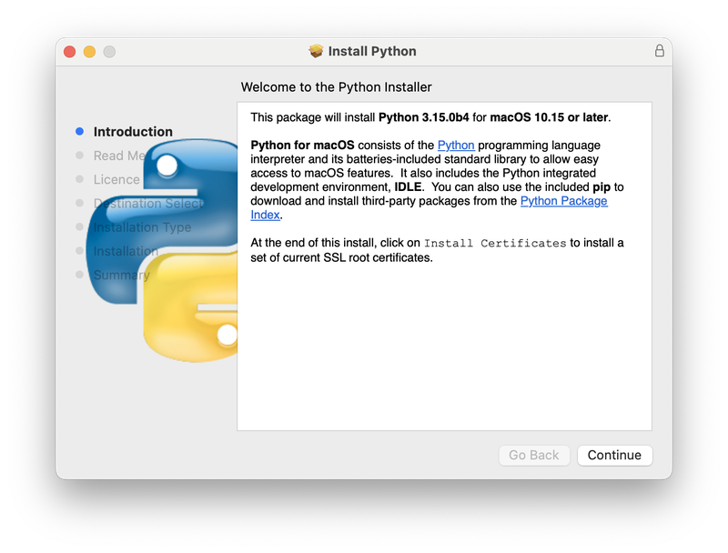
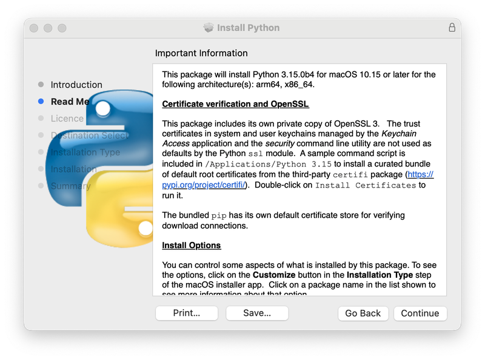
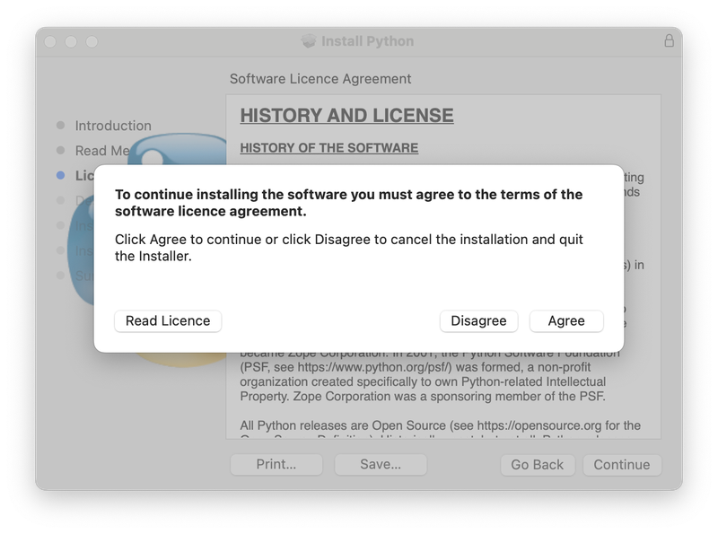
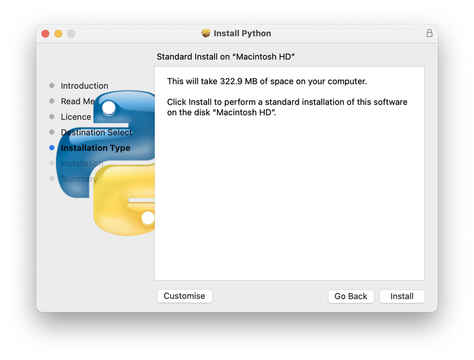
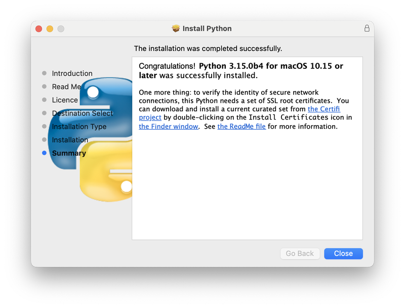
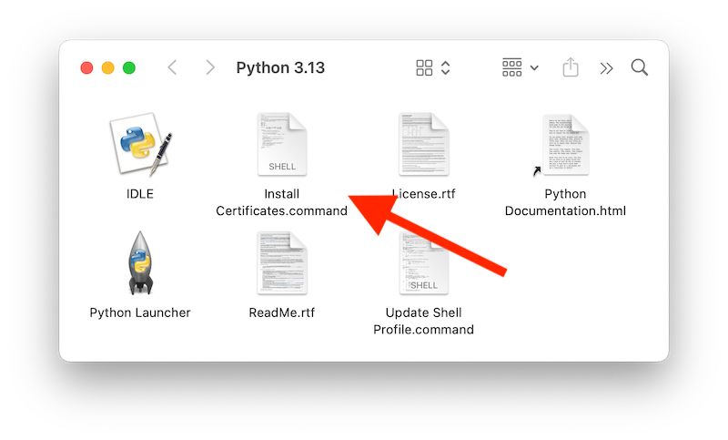
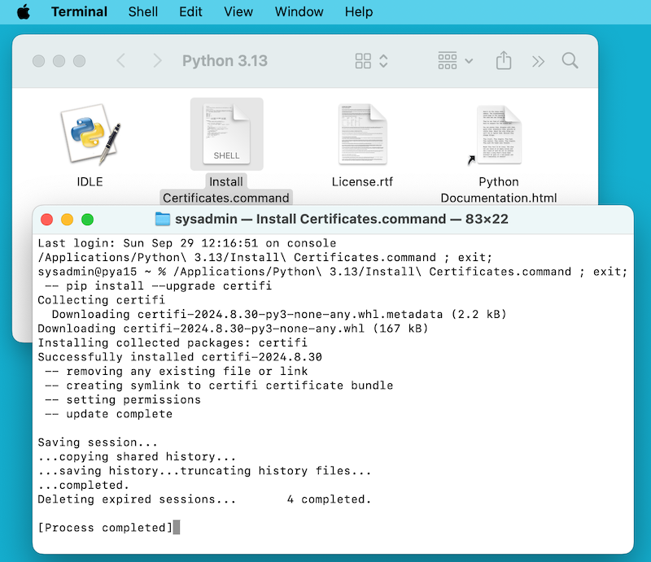
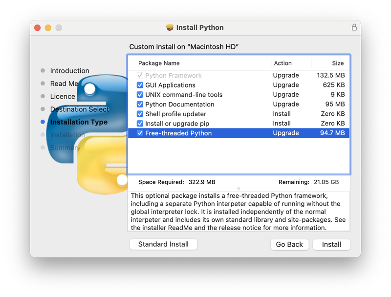

5. macOS 에서 파이썬 사용하기¶
이 문서는 Mac 컴퓨터에서 Python을 시작할 때 알아야 할 macOS 전용 동작에 대한 개요를 제공하는 것을 목표로 합니다. macOS에서 실행되는 Mac의 Python은 다른 유닉스 기반 플랫폼의 Python과 매우 유사하지만, 설치 및 일부 기능에서 차이점이 있습니다.
macOS용 Python을 얻고 설치하는 다양한 방법이 있습니다. 최신 버전 Python은 여러 배포사에서 미리 빌드된 버전을 제공합니다. 이 문서의 대부분은 `python.org 웹사이트 <https://www.python.org/downloads/>`_에서 다운로드한 CPython 릴리스 팀에서 제공하는 Python 사용에 대해 설명합니다. 다른 옵션은 :ref:`alternative_bundles`를 참조하십시오.
5.1. python.org에서 제공하는 macOS용 파이썬 사용하기¶
5.1.1. 설치 단계¶
현재 Python 버전 (security 상태에 있는 버전 제외)의 경우, 릴리스 팀은 모든 새 릴리스에 대해 Python for macOS 설치 프로그램 패키지를 제작합니다. 사용 가능한 설치 프로그램 목록은 여기 <https://www.python.org/downloads/macos/>`_에서 확인할 수 있습니다. 가능하면 최신 지원 Python 버전을 사용하는 것을 권장합니다. 현재 설치 프로그램은 광범위한 macOS 버전(현재 최소 **macOS 10.15 Catalina** 이상 지원)의 모든 Mac(Apple Silicon 및 Intel)에서 네이티브로 실행되는 `universal2 binary 빌드를 제공합니다.
다운로드한 파일은 표준 macOS 설치 프로그램 패키지 파일입니다(pkg). 각 파일에 대한 파일 무결성 정보(체크섬, 크기, sigstore 서명 등)는 릴리스 다운로드 페이지에 포함되어 있습니다. 설치 프로그램 패키지와 그 내용은 macOS Gatekeeper 요구 사항 <https://support.apple.com/en-us/102445>`_을 충족하기 위해 ``Python Software Foundation` Apple Developer ID 인증서로 서명 및 공증되었습니다.
기본 설치를 위해서는 다운로드한 설치 프로그램 패키지 파일을 더블클릭하십시오. 그러면 표준 macOS Installer 앱이 실행되어 여러 설치 프로그램 창 단계 중 첫 번째 단계를 표시해야 합니다.

Continue 버튼을 클릭하면 이 설치 프로그램의 Read Me 가 나타납니다. 다른 중요한 정보 외에도 Read Me 는 어떤 파이썬 버전이 설치될 것인지, 그리고 어떤 macOS 버전에서 지원되는지 설명합니다. 전체 파일을 읽으려면 스크롤을 내려야 할 수도 있습니다. 기본적으로 이 Read Me 는 |applications_python_version_literal| 에도 설치되며 언제든지 읽을 수 있습니다.

Continue 를 클릭하면 파이썬 및 기타 포함된 소프트웨어의 라이센스가 표시되는 다음 단계로 진행됩니다. 다음 단계로 진행하려면 라이센스 약관에 동의 해야 합니다. 이 라이센스 파일도 설치되며 나중에 읽을 수 있습니다.

라이센스 약관을 수락한 후, 다음 단계는 설치 유형 표시입니다. 대부분의 용도에 표준 설치 작업들이 적절합니다.

Customize 버튼을 누르면 설치 프로그램의 특정 패키지 구성 요소를 제외하거나 선택할 수 있습니다. 각 패키지 이름을 클릭하여 어떤 내용이 설치되는지 설명합니다. 선택적 자유 스레딩 기능을 지원하도록 설치하려면 :ref:`install-freethreaded-macos`를 참조하십시오.
어느 경우든, Install 을 클릭하면 새로운 소프트웨어 설치 권한 요청과 함께 설치 프로세스가 시작됩니다. 설치된 파이썬은 Mac의 모든 사용자가 사용할 수 있으므로 Administrator 권한을 가진 macOS 사용자 이름이 필요합니다.
설치가 완료되면 Summary 창이 나타납니다.

|applications_python_version_literal| 창에서 Install Certificates.command 아이콘이나 파일을 더블 클릭하여 설치를 완료하십시오.

이것은 임시 Terminal 셸 창을 열어 새로운 Python을 사용하여 SSL 루트 인증서를 다운로드하고 설치하는 데 사용할 것입니다.

터미널 창에 Successfully installed certifi 및 update complete 가 나타나면 설치가 완료된 것입니다. 이 터미널 창과 설치 프로그램 창을 닫으십시오.
기본 설치에는 다음이 포함됩니다:
Applications폴더에 |python_version_literal| 폴더가 있습니다. 여기에는 공식 Python 배포판의 표준 부분이 되는 개발 환경인 :program:`IDLE`과, macOS `Finder <https://support.apple.com/en-us/HT201732>`에서 파이썬 스크립트를 더블 클릭하여 처리하는 :program:`Python Launcher`가 있습니다.파이썬 실행 파일과 라이브러리를 포함하는 프레임워크
/Library/Frameworks/Python.framework. 설치기는 이 위치를 셸 경로에 추가합니다. 파이썬을 제거하려면, 이 세 가지를 지우면 됩니다. 파이썬 실행 파일에 대한 심볼릭 링크는/usr/local/bin/에 있습니다.
참고
최신 macOS 버전에는 Apple 개발 도구용으로 제공되며 보통 더 오래되고 불완전한 버전의 Python을 연결하는 /usr/bin/python3 의 python3 명령이 포함되어 있습니다. 이 설치는 Apple에서 제어하며 Apple에서 제공하거나 제삼자 소프트웨어에서 사용하므로, 수정하거나 삭제하려고 시도해서는 안 됩니다. python.org 에서 더 새로운 파이썬 버전을 설치하기로 선택하면, 컴퓨터에 공존할 수 있는 서로 다르지만 기능하는 두 개의 파이썬 설치가 갖게 됩니다. 기본 설치 프로그램 옵션은 시스템 python3 대신 python3 을 사용하도록 보장해야 합니다.
5.1.2. 파이썬 스크립트를 실행하는 방법¶
파이썬 인터프리터를 호출하는 방법은 두 가지가 있습니다. 터미널 창에서 유닉스 셸 사용에 익숙하다면, |python_x_dot_y_literal| 또는 python3 을 호출할 수 있으며, 괄호 안에 0개 이상의 명령줄 옵션( 명령 줄과 환경 에서 설명)을 선택적으로 붙일 수 있습니다. 파이썬 튜토리얼에는 또한 using Python interactively from a shell 에 대한 유용한 섹션이 있습니다.
통합 개발 환경을 통해서도 인터프리터를 호출할 수 있습니다. :ref:`idle`은 파이썬의 표준 배포판에 포함된 기초적인 편집기이자 인터프리터 환경입니다. :program:`IDLE`에는 도움말 메뉴가 포함되어 있어 파이썬 문서를 접근할 수 있습니다. 파이썬이 완전히 새로운 사용자라면, 해당 문서에서 튜토리얼 소개를 읽을 수 있습니다.
이용 가능한 다른 편집기 및 IDE가 많이 있습니다. 더 많은 정보는 :ref:`editors`를 참조하십시오.
터미널 창에서 파이썬 스크립트 파일을 실행하려면, 다음처럼 스크립트 파일의 이름으로 인터프리터를 호출할 수 있습니다:
|python_x_dot_y_literal|
myscript.py
Finder에서 스크립트를 실행하려면, 두 가지 방법이 있습니다:
스크립트를 Python Launcher로 드래그하십시오.
Finder 정보 창을 통해 여러분의 스크립트(또는 모든
.py스크립트)를 여는 기본 응용 프로그램으로 Python Launcher를 선택하고 스크립트를 더블 클릭하십시오. Python Launcher에는 스크립트를 시작하는 방법을 제어하는 다양한 설정이 있습니다. Option-드래그하면 하나의 호출에 대해 이를 변경할 수 있으며,Preferences메뉴를 사용하여 전역적으로 변경할 수 있습니다.
macOS Finder에서 직접 스크립트를 실행하는 경우, 스크립트가 셸 프로필에 환경 변수를 설정하는 등 일반적인 셸 환경에서 실행되지 않기 때문에 터미널 창에서 실행하는 경우와 다른 결과가 나올 수 있으니 주의하십시오. 또한, 다른 스크립트나 프로그램과 마찬가지로, 실행하려는 내용에 대해 확신하는 것이 중요합니다.
5.2. 대체 배포판¶
macOS 설치 프로그램용 표준 python.org 외에도 추가 기능을 포함할 수 있는 타사 macOS 배포판이 있습니다. 인기 있는 몇 가지 배포판과 주요 기능은 다음과 같습니다:
- ActivePython
다중 플랫폼 호환성, 설명서가 포함된 설치 프로그램
- Anaconda
인기 있는 과학 모듈(numpy, scipy, pandas 등) 및
conda패키지 관리자.- Homebrew
다수의 파이썬 버전과 많은 서드파티 파이썬 기반 패키지(numpy, scipy, pandas 포함)를 포함하는 macOS용 패키지 관리자입니다.
- MacPorts
다수의 파이썬 버전과 많은 서드파티 파이썬 기반 패키지를 포함하는 macOS용 다른 패키지 관리자입니다. 이전 버전의 macOS용 파이썬과 많은 패키지들의 사전 빌드 버전을 포함할 수 있습니다.
배포판에는 최신 버전의 파이썬이나 기타 라이브러리가 포함되어 있지 않을 수 있으며, 핵심 파이썬 팀에서 유지 관리하거나 지원하지 않음에 유의하십시오.
5.3. 추가 파이썬 패키지 설치하기¶
더 자세한 내용은 Python Packaging User Guide 를 참조하십시오.
5.4. GUI 프로그래밍¶
Mac에서 파이썬으로 GUI 응용 프로그램을 작성하기 위한 몇 가지 옵션이 있습니다.
표준 파이썬 GUI 툴킷은 크로스 플랫폼 Tk 툴킷(https://www.tcl.tk)을 기반으로 하는 tkinter입니다. 설치 프로그램에는 macOS용 네이티브 버전의 Tk가 포함되어 있습니다.
PyObjC는 애플의 Objective-C/Cocoa 프레임워크에 대한 파이썬 바인딩입니다. PyObjC에 대한 정보는 pyobjc 에서 얻을 수 있습니다.
다음과 같은 다양한 대체 macOS GUI 툴킷이 사용할 수 있습니다:
PySide: `Qt GUI toolkit <https://wiki.qt.io/Qt_for_Python>`_에 대한 공식 Python 바인딩입니다.
PyQt: Qt에 대한 대체 Python 바인딩입니다.
Kivy: 데스크톱 및 모바일 플랫폼을 지원하는 교차 플랫폼 GUI 툴킷입니다.
Toga: `BeeWare Project <https://beeware.org>`_의 일부로, 데스크톱, 모바일, 웹, 콘솔 앱을 지원합니다.
wxPython: 데스크톱 운영 체제를 지원하는 교차 플랫폼 툴킷입니다.
5.5. 고급 주제¶
5.5.1. 자유 스레드 바이너리 설치하기¶
Added in version 3.13.
python.org Python for macOS 설치 패키지는 선택적으로 PEP 703, 즉 자유 스레딩 기능( global interpreter lock 이 비활성화된 상태에서 실행)을 지원하는 추가 Python 3.16 빌드를 설치할 수 있습니다. 최신 정보 가능 여부는 python.org 의 릴리스 페이지를 확인하십시오.
자유 스레딩 모드는 작동하며 지속적으로 개선되고 있지만, 일반 빌드와 비교할 때 싱글 스레드 작업 부하에는 추가적인 오버헤드가 있습니다. 또한, 서드파티 패키지, 특히 :term:`extension module`이 있는 패키지는 자유 스레딩 빌드에서 사용 준비가 되어 있지 않거나 :term:`GIL`을 다시 활성화할 수 있습니다. 따라서 자유 스레딩에 대한 지원은 기본적으로 설치되지 않습니다. 이는 상기 설명된 설치 프로그램의 Installation Type 단계에서 Customize 버튼을 클릭하여 사용할 수 있는 별도의 설치 옵션으로 패키징되어 있습니다.

Free-threaded Python 패키지 이름 옆의 상자를 체크하면, 별도의 PythonT.framework`가 일반 :file:`Python.framework`와 함께 :file:/Library/Frameworks`에 설치됩니다. 이 구성은 설치 또는 테스트 시 최소한의 위험으로 자유 스레딩된 Python 3.16 빌드가 전통적인 (GIL만) Python 3.16 빌드와 시스템에 공존할 수 있도록 합니다. 이 설치 레이아웃은 향후 릴리스에서 변경될 수 있습니다.
알려진 주의 사항 및 제한 사항:
The UNIX command-line tools package, which is selected by default, will install links in
/usr/local/binforpython3.16t, the free-threaded interpreter, andpython3.16t-config, a configuration utility which may be useful for package builders. Since/usr/local/binis typically included in your shellPATH, in most cases no changes to yourPATHenvironment variables should be needed to usepython3.16t.For this release, the Shell profile updater package and the
Update Shell Profile.commandin/Applications/Python 3.16/do not support the free-threaded package.자유 스레딩 빌드와 전통적인 빌드는 별도의 검색 경로와 별도의
site-packages디렉터리를 가지고 있으므로, 기본적으로 두 빌드 모두에서 패키지가 필요할 경우 두 곳 모두에 설치해야 할 수 있습니다. 자유 스레딩 패키지는python3.16t사용을 위해 :program:`pip`의 별도 인스턴스를 설치합니다.pip`을 사용하여 :command:`venv 없이 패키지를 설치하려면:
python3.16t -m pip install <package_name>
여러 파이썬 환경에서 작업할 때, 일반적으로 :ref:`가상 환경을 생성하고 사용 <tut-venv>`하는 것이 가장 안전하고 쉽습니다. 이렇게 하면 가능한 명령어 이름 충돌 및 어떤 파이썬이 사용되는지에 대한 혼동을 방지할 수 있습니다:
python3.16t -m venv <venv_name>
그런 다음 :command:`activate`합니다.
자유 스레딩 버전의 IDLE을 실행하려면:
python3.16t -m idlelib
두 빌드의 인터프리터는 모두 동일한 PYTHON 환경 변수 <using-on-envvars>`에 응답하며, 예를 들어 셸 프로필에 ``PYTHONPATH``가 설정되어 있다면 예상치 못한 결과를 초래할 수 있습니다. 필요한 경우 환경 변수를 무시하기 위해 `-E``와 같은 :ref:`명령줄 옵션 <using-on-interface-options>`을 사용할 수 있습니다.
자유 스레딩 빌드는 전통적인 프레임워크에 설치된
OpenSSL및Tk와 같은 타사 공유 라이브러리와 연결됩니다. 이는 두 빌드 모두 Install Certificates.command 스크립트에 의해 설치된 신뢰 인증서 세트를 공유한다는 것을 의미하며, 따라서 단 한 번만 실행하면 됩니다.If you cannot depend on the link in
/usr/local/binpointing to thepython.orgfree-threadedpython3.16t(for example, if you want to install your own version there or some other distribution does), you can explicitly set your shellPATHenvironment variable to include thePythonTframeworkbindirectory:export PATH="/Library/Frameworks/PythonT.framework/Versions/3.16/bin":"$PATH"
전통적인 프레임워크 설치는 기본적으로
Python.framework`를 제외하고 비슷한 작업을 수행합니다. 프레임워크 ``bin`디렉터리가 둘 다PATH``에 있으면, 만약 양쪽 모두에 |python_x_dot_y_literal|와 같은 중복된 이름이 있을 경우 혼동을 초래할 수 있음에 유의하십시오. 실제로 사용되는 경로는 ``PATH``에 나타나는 순서에 따라 달라집니다. ``which python3.x또는which python3.xt명령을 사용하면 어떤 경로가 사용되는지 확인할 수 있습니다. 가상 환경을 사용하면 이러한 모호성을 피하는 데 도움이 될 수 있습니다. 또 다른 옵션은 원하는 인터프리터에 대한 셸 :command:`alias`를 만드는 것입니다. 예를 들어 다음과 같습니다:alias py3.16="/Library/Frameworks/Python.framework/Versions/3.16/bin/python3.16" alias py3.16t="/Library/Frameworks/PythonT.framework/Versions/3.16/bin/python3.16t"
5.5.2. 명령줄을 이용한 설치¶
자동화를 사용하여 python.org 설치 프로그램을 설치하려면 (익숙한 macOS Installer GUI 앱을 사용하기보다는), macOS 명령줄 installer 유틸리티를 사용하여 기본값이 아닌 옵션도 선택할 수 있습니다. 만약 :command:`installer`에 익숙하지 않다면 다소 난해할 수 있습니다 (자세한 내용은 :command:`man installer`를 참조하십시오). 예시로, 다음 셸 스니펫은 3.16.0b2 릴리스를 사용하고 자유 스레딩 인터프리터 옵션을 선택하는 방법을 보여줍니다:
RELEASE="python-3.160b2-macos11.pkg"
# download installer pkg
curl -O https://www.python.org/ftp/python/3.16.0/${RELEASE}
# create installer choicechanges to customize the install:
# enable the PythonTFramework-3.16 package
# while accepting the other defaults (install all other packages)
cat > ./choicechanges.plist <<EOF
<?xml version="1.0" encoding="UTF-8"?>
<!DOCTYPE plist PUBLIC "-//Apple//DTD PLIST 1.0//EN" "http://www.apple.com/DTDs/PropertyList-1.0.dtd">
<plist version="1.0">
<array>
<dict>
<key>attributeSetting</key>
<integer>1</integer>
<key>choiceAttribute</key>
<string>selected</string>
<key>choiceIdentifier</key>
<string>org.python.Python.PythonTFramework-3.16</string>
</dict>
</array>
</plist>
EOF
sudo installer -pkg ./${RELEASE} -applyChoiceChangesXML ./choicechanges.plist -target /
이후 다음과 같은 방식으로 두 설치 프로그램 빌드가 모두 사용 가능합니다:
$ # test that the free-threaded interpreter was installed if the Unix Command Tools package was enabled $ /usr/local/bin/python3.16t -VV Python 3.16.0b2 free-threading build (v3.16.0b2:3a83b172af, Jun 5 2024, 12:57:31) [Clang 15.0.0 (clang-1500.3.9.4)] $ # and the traditional interpreter $ /usr/local/bin/python3.16 -VV Python 3.16.0b2 (v3.16.0b2:3a83b172af, Jun 5 2024, 12:50:24) [Clang 15.0.0 (clang-1500.3.9.4)] $ # test that they are also available without the prefix if /usr/local/bin is on $PATH $ python3.16t -VV Python 3.16.0b2 free-threading build (v3.16.0b2:3a83b172af, Jun 5 2024, 12:57:31) [Clang 15.0.0 (clang-1500.3.9.4)] $ python3.16 -VV Python 3.16.0b2 (v3.16.0b2:3a83b172af, Jun 5 2024, 12:50:24) [Clang 15.0.0 (clang-1500.3.9.4)]
참고
현재 python.org 설치 프로그램은 /Library/Frameworks/, /Applications, 및 /usr/local/bin`과 같은 고정된 위치에만 설치합니다. 따라서 :command:`installer -domain 옵션을 사용하여 다른 위치에 설치할 수 없습니다.
5.5.3. 파이썬 응용 프로그램 배포하기¶
사용자의 Python 코드를 독립 실행형 배포 가능한 응용 프로그램으로 변환하는 여러 도구들이 존재합니다:
py2app: 파이썬 프로젝트로부터 macOS
.app번들을 생성하는 기능을 지원합니다.Briefcase: BeeWare Project <https://beeware.org>`의 일부입니다. 이 프로그램은 macOS에서 `.app`` 번들 생성을 지원하는 크로스 플랫폼 패키징 도구이며, 서명 및 노타리제이션 관리도 수행합니다.
PyInstaller: 단일 파일 또는 폴더를 배포 가능한 아티팩트로 생성하는 크로스 플랫폼 패키징 도구입니다.
5.5.4. App Store 준수¶
macOS App Store를 통해 배포되는 앱은 Apple의 앱 검토 과정을 통과해야 합니다. 이 과정에는 제출된 애플리케이션 번들을 검사하는 일련의 자동화된 유효성 검사 규칙이 포함되어 있습니다.
Python 표준 라이브러리에는 이러한 자동화된 규칙을 위반하는 것으로 알려진 일부 코드가 포함되어 있습니다. 이러한 위반 사항은 오탐지로 보이는 것으로 보이지만, Apple의 검토 규칙은 이의를 제기할 수 없습니다. 따라서 앱이 App Store 검토를 통과하려면 Python 표준 라이브러리를 수정하는 것이 필요합니다.
Python 소스 트리는 App Store 검토 과정에서 문제를 일으킬 수 있는 모든 코드를 제거할 a patch file <Mac/Resources/app-store-compliance.patch>`를 포함하고 있습니다. 이 패치는 :option:–with-app-store-compliance` 옵션으로 CPython이 구성될 때 자동으로 적용됩니다.
이 패치는 Mac에서 CPython을 사용하는 데 일반적으로 필요하지 않으며, macOS App Store 외부 에 앱을 배포하는 경우에도 필요하지 않습니다. 오직 macOS App Store를 배포 채널로 사용하는 경우에만 필요합니다.
5.6. 기타 자원¶
`python.org Help page <https://www.python.org/about/help/>`_에는 유용한 리소스로 연결되는 많은 링크가 있습니다. `Pythonmac-SIG mailing list <https://www.python.org/community/sigs/current/pythonmac-sig/>`_는 Mac에서 Python 사용자 및 개발자를 위한 또 다른 지원 리소스입니다.